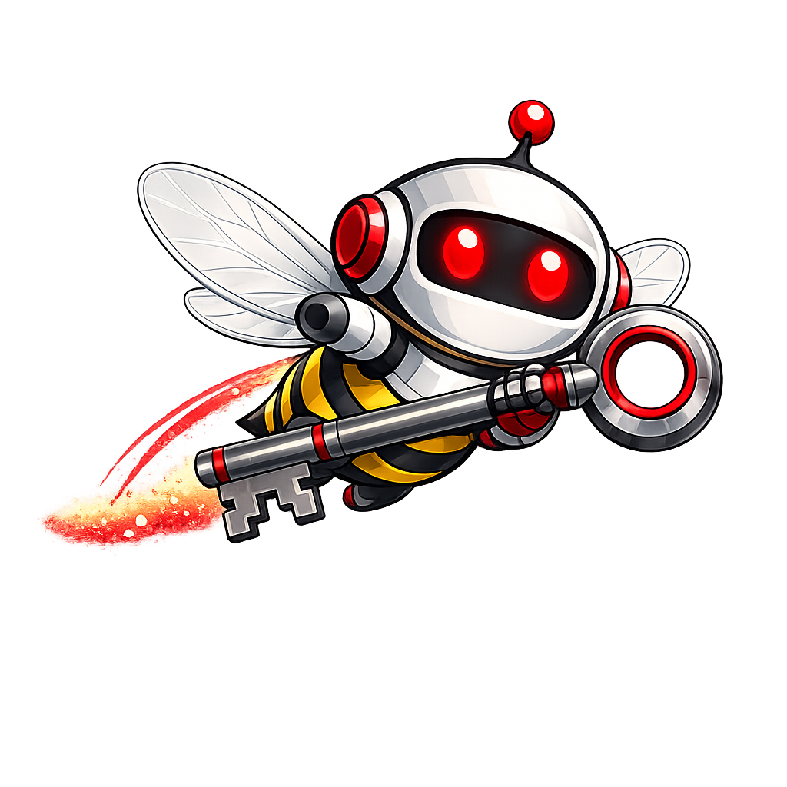

WaxFrame
API Key Setup Guide

In Pro mode, WaxFrame sends prompts directly to each AI automatically — no copy/paste, no tab switching. Each AI needs its own API key. Follow the guides below to get set up.
In Pro mode, WaxFrame sends your prompts directly to each AI and fills in the responses automatically — no copy/paste, no tab switching. An API key is a private password that lets WaxFrame talk to each AI on your behalf.
Without a key, WaxFrame works in Free mode — you copy/paste prompts manually. API keys are only needed for the fully automated Pro experience.
Keys are stored in your browser only. They go directly from your browser to each AI provider. WaxFrame has no server — your keys are never shared with any third party.

WaxFrame — open source, no server, no tracking. Learn more →
gemini-2.5-flash
Google's fast multimodal model
deepseek-chat
DeepSeek's flagship model
gpt-4o
Via Azure OpenAI Service
If you already have Azure OpenAI access:
gpt-4.1
OpenAI's flagship model
claude-sonnet-4-6
Anthropic's capable everyday model
grok-4
sonar-pro
WaxFrame is fully open source under the AGPL-3.0 license. Every line of code is public and auditable.
💡 Your API keys go directly from your browser to each AI provider. WaxFrame never sees them. Read the source on GitHub →